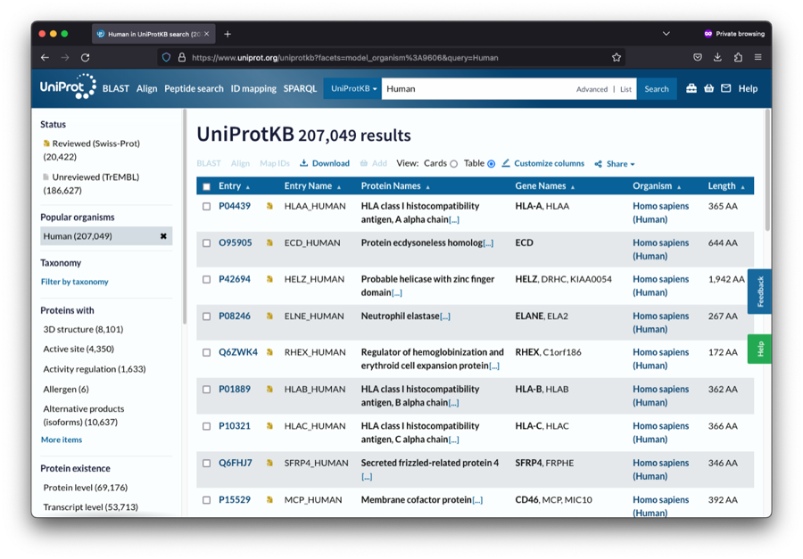
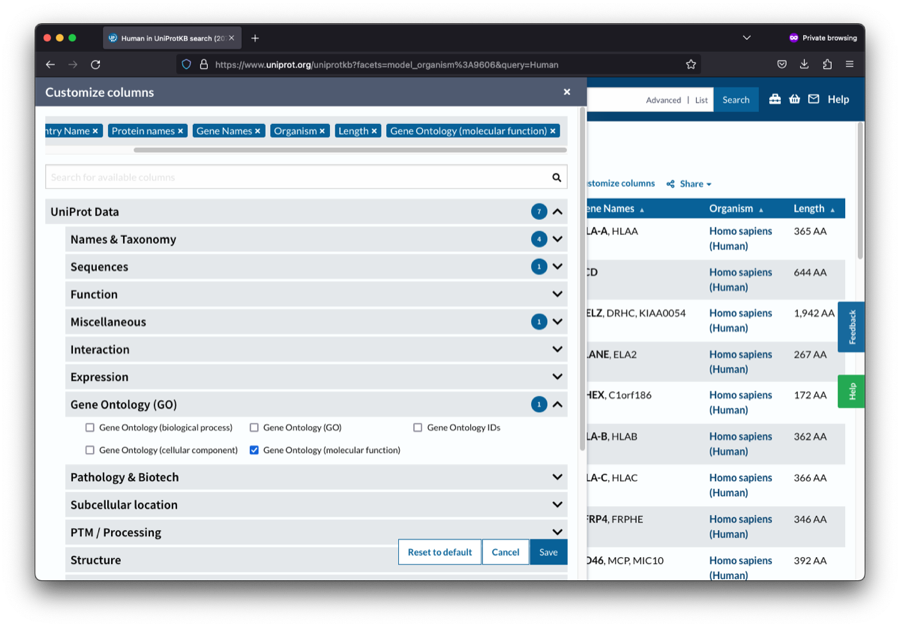
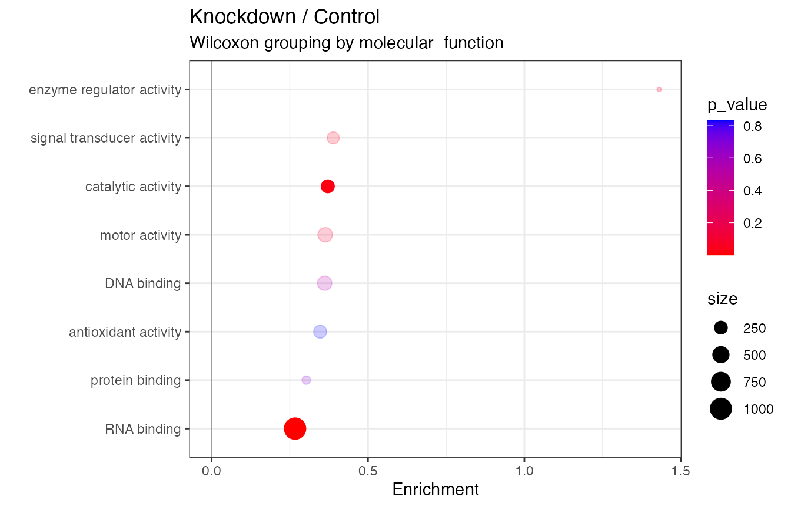

Introduction
In mass spectrometry-based proteomics, raw search engine outputs (such as from ProteomeDiscoverer, MaxQuant, or FragPipe) often contain minimal metadata—frequently restricted to protein accession identifiers, preliminary gene symbols, or abbreviated descriptions.
To derive biological meaning from quantitative proteomics data, proteins must be contextualized with richer functional annotations. These include:
- Gene Ontology (GO) terms: Molecular Function (e.g., catalytic activity, ion binding), Biological Process (e.g., cell division, DNA repair), and Cellular Component (e.g., mitochondrion, nucleus).
- Subcellular Localization: Organelle and compartmental designations.
- Pathways: Biological reaction networks from Reactome, KEGG, or WikiPathways.
- Curated Nomenclature: Standardized gene symbols and protein descriptions from reference sequence databases.
In tidyproteomics, annotations are integral to
downstream analysis:
-
Subsetting & Filtering: Isolate proteins of
interest using semantic queries with
subset()and the%like%operator. - Visual Labeling: Highlight specific proteins or protein families on volcano plots, PCA plots, and heatmaps.
-
Term Enrichment Analysis: Identify statistically
over-represented or systematically skewed functional terms via
enrichment()andplot_enrichment().
This vignette guides you through the process of obtaining new
annotations from UniProt or a reference FASTA file, formatting them into
tidy tables, importing them into your tidyproteomics data
object with annotate(), and utilizing them in downstream
analyses.
The Tidyproteomics Annotation Model
Annotations in tidyproteomics are structured as a clean,
long-format table accessible at data$annotations. Every
annotation table requires three columns:
-
Identifier column (
proteinorpeptide): Matchesdata$identifier. -
term: The category or ontology descriptor (e.g.,'gene_name','description','molecular_function','biological_process','subcellular_location'). -
annotation: The actual textual term or identifier value.
You can inspect the annotations currently associated with any
tidyproteomics data object using
show_annotations():
# Display available annotation categories in the built-in HeLa dataset
hela_proteins %>% show_annotations()
#> ℹ Current Annotation Terms
#> • protein
#>
#> • description
#>
#> • biological_process
#>
#> • cellular_component
#>
#> • molecular_function
#>
#> • gene_id_entrez
#>
#> • gene_name
#>
#> • wiki_pathway
#>
#> • reactome_pathway
#>
#> • gene_id_ensembleTo view the raw annotation entries for specific proteins, simply
inspect data$annotations:
hela_proteins$annotations %>%
filter(protein %in% c('P68431', 'P62805')) %>%
head(8)
#> # A tibble: 8 × 3
#> protein term annotation
#> <chr> <chr> <chr>
#> 1 P68431 description Histone H3.1 OS=Homo sapiens OX=9606 GN=H3C1 PE=1 …
#> 2 P68431 biological_process cell growth
#> 3 P68431 cellular_component cell surface;membrane;nucleus
#> 4 P68431 molecular_function RNA binding;structural molecule activity
#> 5 P68431 gene_id_entrez 8350; 8351; 8352; 8353; 8354; 8355; 8356; 8357; 83…
#> 6 P68431 gene_name H3C1; H3C10; H3C11; H3C12; H3C2; H3C3; H3C4; H3C6;…
#> 7 P68431 wiki_pathway Histone modifications; FBXL10 enhancement of MAP/E…
#> 8 P68431 reactome_pathway Estrogen-dependent gene expression; HATs acetylate…Downloading Annotations from UniProt
The Universal Protein Resource (UniProt) is the central repository for protein sequence and functional annotation data. The web portal provides an intuitive way to customize and export comprehensive annotation tables for any proteome.
Step 1: Search for the Proteome of Interest
- Navigate to uniprot.org.
- Enter your organism name or taxonomy identifier in the search bar
(e.g.,
Humanortaxonomy_id:9606). - On the left filter panel, select Reviewed (Swiss-Prot) to filter for high-confidence, manually curated entries (approximately 20,400 proteins for human).

Step 2: Customize Columns for Required Annotations
- Click the “Customize columns” button directly above the results table.
- In the configuration modal, expand the categories containing
annotations relevant to your study:
- Gene Ontology (GO): Check Gene Ontology (molecular function), Gene Ontology (biological process), and/or Gene Ontology (cellular component).
- Subcellular location: Check Subcellular location [CC].
- Function / Pathways: Check Pathway, Catalytic activity, or Keywords.
- Click the blue “Save” button at the bottom right of the modal to apply the customized view.

Step 3: Download the Data Table
- Click the “Download” button at the top of the search table.
- Set Format to TSV (Tab-Separated Values).
- Choose Compressed (gzip) for large datasets or Uncompressed for smaller sets.
- Save the file to your project directory (e.g.,
data/uniprot_human_annotations.tsv).
Tip - Programmatic Download via UniProt REST API: You can also download annotations directly within an R script using UniProt’s REST API, ensuring complete reproducibility:
# Example: Programmatic download of reviewed human proteins with GO and location terms uniprot_url <- paste0( "https://rest.uniprot.org/uniprotkb/stream?", "format=tsv&", "query=%28model_organism%3A9606%29+AND+%28reviewed%3Atrue%29&", "fields=accession%2Cid%2Cgene_names%2Cgo_f%2Cgo_p%2Csubcellular_location" ) download.file(uniprot_url, destfile = "data/uniprot_human_annotations.tsv")
Tidying Downloaded Annotations
Files exported from UniProt cannot be attached directly without a
brief tidying step. Raw UniProt TSVs differ from the
tidyproteomics specification in several ways:
- The accession column is named
Entryinstead ofprotein. - Multi-term fields are concatenated into a single string with
semicolons (e.g.,
"structural constituent of chromatin [GO:0005488]; protein binding [GO:0005515]"). - GO terms and subcellular locations often include accession tags in
brackets (e.g.,
[GO:0005488]or[SL-0191]), which should be stripped for clean visualization. - The table is wide (one column per annotation type) and needs to be
pivoted to the long three-column format (
protein,term,annotation).
Tidying Workflow
Here is how to read and transform a downloaded UniProt table into the required tidy format:
# Example of raw UniProt export data matching proteins in hela_proteins
uniprot_raw <- tibble(
Entry = c("P68431", "P62805", "P06576", "Q15149"),
`Gene Ontology (molecular function)` = c(
"structural constituent of chromatin [GO:0005488]; protein binding [GO:0005515]",
"structural constituent of chromatin [GO:0005488]; DNA binding [GO:0003677]",
"ATP binding [GO:0005524]; proton-transporting ATPase activity [GO:0046933]",
"actin binding [GO:0003779]; structural molecule activity [GO:0005198]"
),
`Subcellular location [CC]` = c(
"Nucleus [SL-0191]",
"Nucleus [SL-0191]; Chromosome [SL-0077]",
"Mitochondrion inner membrane [SL-0168]",
"Cytoplasm [SL-0086]; Cytoskeleton [SL-0090]"
)
)
# For your project, load your downloaded file:
# uniprot_raw <- readr::read_tsv("data/uniprot_human_annotations.tsv")
uniprot_raw
#> # A tibble: 4 × 3
#> Entry `Gene Ontology (molecular function)` Subcellular location…¹
#> <chr> <chr> <chr>
#> 1 P68431 structural constituent of chromatin [GO:0005488… Nucleus [SL-0191]
#> 2 P62805 structural constituent of chromatin [GO:0005488… Nucleus [SL-0191]; Ch…
#> 3 P06576 ATP binding [GO:0005524]; proton-transporting A… Mitochondrion inner m…
#> 4 Q15149 actin binding [GO:0003779]; structural molecule… Cytoplasm [SL-0086]; …
#> # ℹ abbreviated name: ¹`Subcellular location [CC]`We now tidy the table:
tidy_annotations <- uniprot_raw %>%
# 1. Rename Entry to 'protein' and select columns of interest
select(
protein = Entry,
molecular_function = `Gene Ontology (molecular function)`,
subcellular_location = `Subcellular location [CC]`
) %>%
# 2. Split semicolon-delimited entries into separate rows
separate_rows(molecular_function, sep = ";\\s*") %>%
separate_rows(subcellular_location, sep = ";\\s*") %>%
# 3. Remove trailing bracketed accession IDs [GO:...] or [SL-...]
mutate(
molecular_function = sub("\\s*\\[.+\\]$", "", molecular_function),
subcellular_location = sub("\\s*\\[.+\\]$", "", subcellular_location)
) %>%
# 4. Pivot wide annotation columns to the standard term/annotation format
pivot_longer(
cols = c(molecular_function, subcellular_location),
names_to = "term",
values_to = "annotation"
) %>%
# 5. Remove empty or missing annotations
filter(!is.na(annotation), annotation != "") %>%
distinct()
tidy_annotations %>% head(10)
#> # A tibble: 10 × 3
#> protein term annotation
#> <chr> <chr> <chr>
#> 1 P68431 molecular_function structural constituent of chromatin
#> 2 P68431 subcellular_location Nucleus
#> 3 P68431 molecular_function protein binding
#> 4 P62805 molecular_function structural constituent of chromatin
#> 5 P62805 subcellular_location Nucleus
#> 6 P62805 subcellular_location Chromosome
#> 7 P62805 molecular_function DNA binding
#> 8 P06576 molecular_function ATP binding
#> 9 P06576 subcellular_location Mitochondrion inner membrane
#> 10 P06576 molecular_function proton-transporting ATPase activityThe resulting table conforms perfectly to the
tidyproteomics specification: three columns
(protein, term, and
annotation).
Importing Annotations with annotate()
The annotate() function integrates the prepared
annotation table into your tidyproteomics data object:
Managing Duplicate Annotations
The duplicates argument controls how new annotations
interact with existing ones:
-
"replace"(default): Replaces existing annotations for thatproteinandterm. Ideal when updating gene symbols or descriptions where only one canonical value is desired. -
"merge": Appends new values to existing ones, concatenating multiple terms with a semicolon separator ("; "). Ideal for Gene Ontology categories, pathways, or protein domains. -
"leave": Appends all new rows without merging, allowing multiple distinct rows for each protein/term pair.
Let’s attach the tidied annotations to hela_proteins
using duplicates = "merge":
hela_annotated <- hela_proteins %>%
annotate(tidy_annotations, duplicates = "merge")
# Confirm the new annotation categories are present
hela_annotated %>% show_annotations()
#> ℹ Current Annotation Terms
#> • protein
#>
#> • biological_process
#>
#> • cellular_component
#>
#> • description
#>
#> • gene_id_ensemble
#>
#> • gene_id_entrez
#>
#> • gene_name
#>
#> • molecular_function
#>
#> • wiki_pathway
#>
#> • reactome_pathway
#>
#> • subcellular_locationNotice that subcellular_location is now available as an
annotation category, and molecular_function has been
augmented with the newly imported terms!
Extracting Annotations from a FASTA File
Search engine outputs often suffer from outdated or truncated gene symbols. A reference FASTA file used during the database search is the authoritative source for sequence headers.
tidyproteomics includes an internal parser,
tidyproteomics:::fasta_parse(), capable of extracting FASTA
headers into structured data frames:
# Locate the human FASTA file included with tidyproteomics
fasta_file <- path_to_package_data("fasta")
# Parse FASTA headers into a tidy data frame
data_fasta <- tidyproteomics:::fasta_parse(fasta_file, as = "data.frame") %>%
select(protein = accession, gene_name, description) %>%
pivot_longer(
cols = c("gene_name", "description"),
names_to = "term",
values_to = "annotation"
)
#> ℹ Parsing FASTA file human.fasta
#> ✔ Parsing FASTA file human.fasta ... done
#>
data_fasta %>% head(6)
#> # A tibble: 6 × 3
#> protein term annotation
#> <chr> <chr> <chr>
#> 1 O15205 gene_name UBD
#> 2 O15205 description Ubiquitin D
#> 3 O60524 gene_name NEMF
#> 4 O60524 description Ribosome quality control complex subunit NEMF
#> 5 P06576 gene_name ATP5F1B
#> 6 P06576 description ATP synthase subunit beta, mitochondrialWe can now use duplicates = "replace" to update the
gene_name and description annotations with the
exact canonical values from the FASTA database:
hela_updated <- hela_proteins %>%
annotate(data_fasta, duplicates = "replace")
# Compare updated annotations for ATP synthase beta (P06576)
hela_updated$annotations %>%
filter(protein == "P06576", term %in% c("gene_name", "description"))
#> # A tibble: 2 × 3
#> protein term annotation
#> <chr> <chr> <chr>
#> 1 P06576 description ATP synthase subunit beta, mitochondrial
#> 2 P06576 gene_name ATP5F1BUtilizing Annotations in Downstream Analyses
Once imported, annotations can be leveraged across all
tidyproteomics workflows.
1. Subsetting by Annotation
Filter datasets based on annotation categories using
subset() and the %like% regular expression
operator:
# Subset proteins residing in the Nucleus based on newly imported annotations
nuclear_proteins <- hela_annotated %>%
subset(subcellular_location %like% "Nucleus")
#>
#> ℹ Subsetting data: subcellular_location %like% Nucleus
#> ✔ Subsetting data: subcellular_location %like% Nucleus ... done
#>
nuclear_proteins
#>
#> ── Quantitative Proteomics Data Object ──
#>
#> Origin ProteomeDiscoverer
#> proteins (19.62 kB)
#> Composition 6 files
#> 2 samples (control, knockdown)
#> Quantitation 2 proteins
#> 0.92 log10 dynamic range
#> 0% missing values
#> *imputed
#> Accounting (4) num_peptides num_psms num_unique_peptides imputed
#> Annotations (10) biological_process cellular_component description gene_id_ensemble
#> gene_id_entrez gene_name molecular_function wiki_pathway
#> reactome_pathway subcellular_location
#> 2. Functional Enrichment Analysis
Term enrichment analyses (e.g., using Wilcoxon rank-sum,
GSEA, or Fisher’s exact test) test whether specific annotation
categories are significantly skewed or over-represented between
experimental conditions. Because enrichment algorithms evaluate terms
relative to the whole proteome background, expression() and
enrichment() should be performed across the complete
dataset (rather than a pre-filtered subset):
# Test enrichment of molecular function terms across knockdown vs control
enrichment_results <- hela_annotated %>%
expression(knockdown/control) %>%
enrichment(
knockdown/control,
.terms = "molecular_function",
.method = "wilcoxon"
)
# Visualize the enrichment results
enrichment_results %>%
plot_enrichment(
knockdown/control,
.term = "molecular_function",
enrichment_min = 0,
significance_max = 0.05
)
3. Exporting Analysis Tables
Export your enrichment results along with corresponding statistical metrics (p-value, adjusted p-value, enrichment score, and term size) for downstream reporting or publication:
enrichment_results %>%
export_analysis(
knockdown/control,
.analysis = "enrichment",
.term = "molecular_function"
)
#> # A tibble: 8 × 5
#> annotation p_value adj_p_value enrichment size
#> <chr> <dbl> <dbl> <dbl> <int>
#> 1 RNA binding 1.67e-10 0.00000000133 0.267 1038
#> 2 catalytic activity 2.53e- 2 0.101 0.372 261
#> 3 signal transducer activity 5.82e- 2 0.155 0.389 225
#> 4 enzyme regulator activity 9.56e- 2 0.191 1.43 6
#> 5 motor activity 1.26e- 1 0.201 0.363 383
#> 6 DNA binding 5.36e- 1 0.714 0.361 366
#> 7 protein binding 6.86e- 1 0.784 0.303 63
#> 8 antioxidant activity 8.32e- 1 0.832 0.347 272Summary Checklist
When adding annotations to your proteomics dataset:
-
Format Requirements: Ensure your table contains
protein(or your dataset’s identifier),term, andannotation. -
Text Cleaning: Split multi-value strings
(e.g., with
separate_rows()) and remove bracketed accession codes. -
Deduplication Strategy: Use
duplicates = "replace"for mutually exclusive terms (e.g.,gene_name) andduplicates = "merge"for additive ontologies (e.g., GO terms, pathways). -
Verification: Always verify your imported
annotations with
show_annotations().